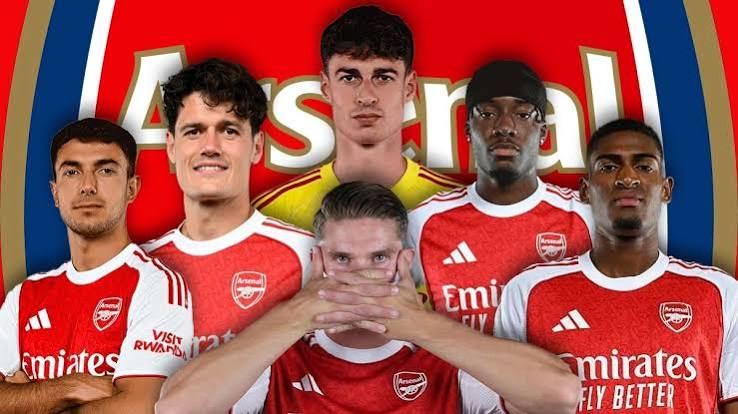
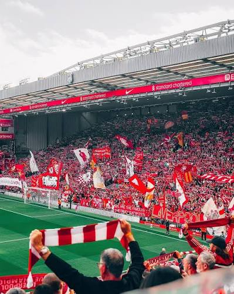
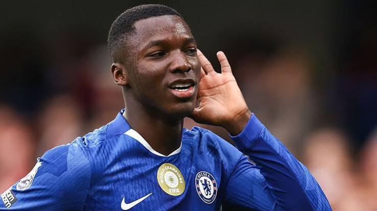
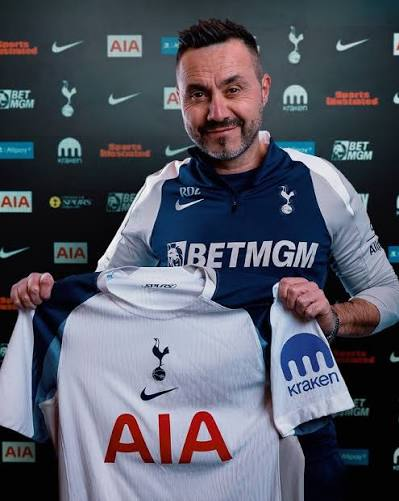
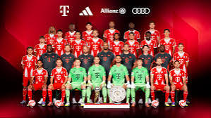
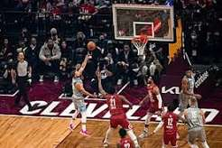
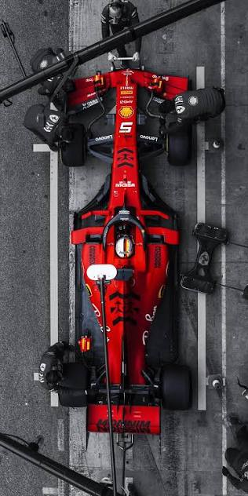

Premier LeagueArsenal Continue Squad Rebuild With New Signing
The north London club has added further depth to midfield as part of a summer rebuild aimed at closing the gap at the top of the table.

A dominant first-half display and a disciplined defensive effort gave Liverpool a convincing opening-day win, with the front line combining fluently from the first whistle.
Read Story → Sample headline — not real breaking news
Premier LeagueThe north London club has added further depth to midfield as part of a summer rebuild aimed at closing the gap at the top of the table.

Transfer NewsChelsea have entered discussions with a European club over a young midfielder who has attracted interest from across the continent this summer.
The reigning champions have named an experienced squad as they look to defend their title against a strengthened field of contenders.
 Premier League
Premier League
A congested fixture list and a run of difficult away trips will provide an early examination of City's squad depth this season.

Premier LeaguePreseason results suggest a more direct style of play, with the coaching staff placing greater emphasis on quick transitions.

European FootballThe Bundesliga champions have finalised their matchday squad ahead of the new campaign, with two academy graduates handed first-team numbers.
Lucas Ferreira
Sporting CP → Manchester United
Medical completed on Thursday, with an official announcement expected within days.
ConfirmedMarco Reinholt
RB Leipzig → Chelsea
Personal terms are close to being agreed, though a fee has yet to be finalised between the clubs.
NegotiationsDiego Salinas
River Plate → Arsenal
Scouts have watched the forward on multiple occasions, though no formal approach has been made.
RumourTomas Vidović
Dinamo Zagreb → Newcastle United
A fee has reportedly been agreed in principle, with the player expected to undergo a medical next week.
Negotiations
A late three-pointer sealed a hard-fought season opener on the road for the reigning champions.

A straight-sets win kept the tournament favourite on course for a first title of the season.

A well-timed pit stop under caution proved decisive as the front runners gambled on strategy.
| Pos | Team | P | W | D | L | GD | Pts |
|---|---|---|---|---|---|---|---|
| 1 | Liverpool | 2 | 2 | 0 | 0 | +5 | 6 |
| 2 | Manchester City | 2 | 2 | 0 | 0 | +4 | 6 |
| 3 | Arsenal | 2 | 1 | 1 | 0 | +3 | 4 |
| 4 | Chelsea | 2 | 1 | 1 | 0 | +2 | 4 |
| 5 | Newcastle United | 2 | 1 | 0 | 1 | +1 | 3 |
| 6 | Tottenham Hotspur | 2 | 1 | 0 | 1 | 0 | 3 |
| 7 | Aston Villa | 2 | 0 | 2 | 0 | -1 | 2 |
| 8 | Brighton & Hove Albion | 2 | 0 | 1 | 1 | -2 | 1 |